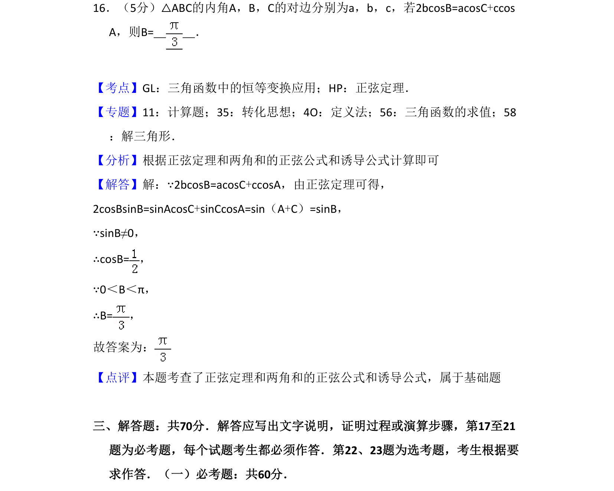
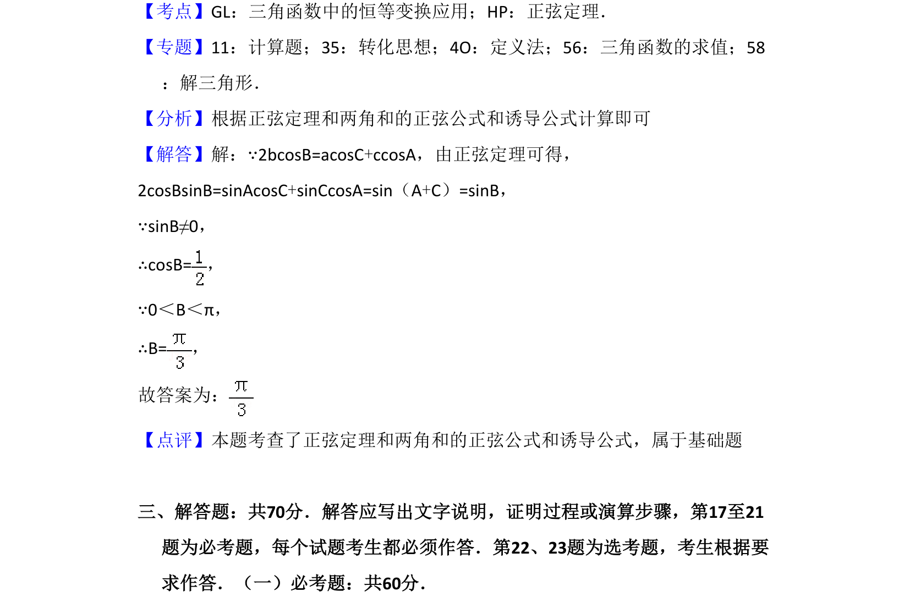

考点：正弦定理 两角和的正弦公式 诱导公式 解三角形

本题考查利用正弦定理与三角恒等变换求解三角形内角，属于基础计算题。

📄 原 PDF 第 11 页：
素材/真题/吉林/2008-2024·（吉林）数学高考真题/2017年高考数学试卷（文）（新课标Ⅱ）（解析卷）.pdf
16．（5分）△ABC的内角A，B，C的对边分别为a，b，c，若2bcosB=acosC+ccos A，则B= ．
【考点】GL：三角函数中的恒等变换应用；HP：正弦定理．菁优网版权所有 【专题】11：计算题；35：转化思想；4O：定义法；56：三角函数的求值；58 ：解三角形． 【分析】根据正弦定理和两角和的正弦公式和诱导公式计算即可 【解答】解：∵2bcosB=acosC+ccosA，由正弦定理可得， 2cosBsinB=sinAcosC+sinCcosA=sin（A+C）=sinB， ∵sinB≠0， ∴cosB=， ∵0＜B＜π， ∴B=， 故答案为： 【点评】本题考查了正弦定理和两角和的正弦公式和诱导公式，属于基础题 三、解答题：共70分．解答应写出文字说明，证明过程或演算步骤，第17至21 题为必考题，每个试题考生都必须作答．第22、23题为选考题，考生根据要 求作答．（一）必考题：共60分．